The collection
Every design below is made to order in solid teak. Sizes, finishes and details can be tailored — ask us by email or on Instagram.
01 · The modern entrance
Most requestedThree designs, one idea: let the legs do the talking. The modern console floats on two legs with a softly rounded top and a single sculpted collar; the classic adds a moulded top, carved corbels and layered turnings; the four-leg stands free, with a scalloped apron and urn-turned legs.
Solid teak · hand-turned legs
Two-leg wall console or four-leg freestanding
Made to your width and height

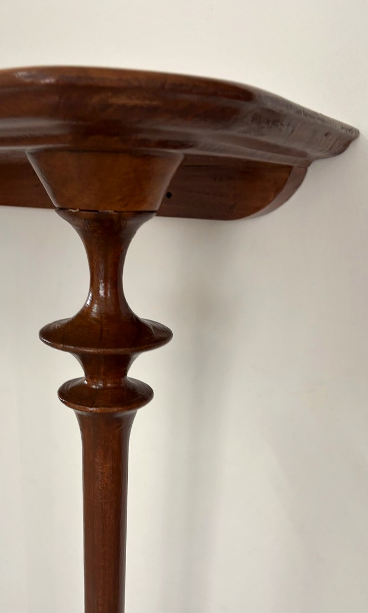

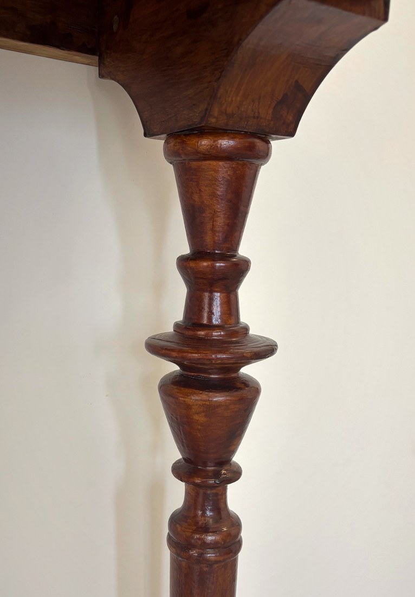

Freestanding, so it works away from a wall — behind a sofa or under a mirror.

The backrest folds down, turning the bench into a low diwan.
02 · The Chettinad hall
Rows of turned spindles, raised panels and hand-painted floral tiles, carried on bun feet and brass-bracketed arms — the verandah seat of a Karaikudi mansion, made for today’s living room.
Solid teak · painted ceramic tiles · brass fittings
Also made as a hanging oonjal (swing)
03 · The quiet bath
Offset teak frames with a hand-woven cane shelf below, on small castors so it moves with you. Architectural enough for a bedroom corner, practical enough for the bath.
Teak · hand-woven cane
Two-rail and three-rail versions
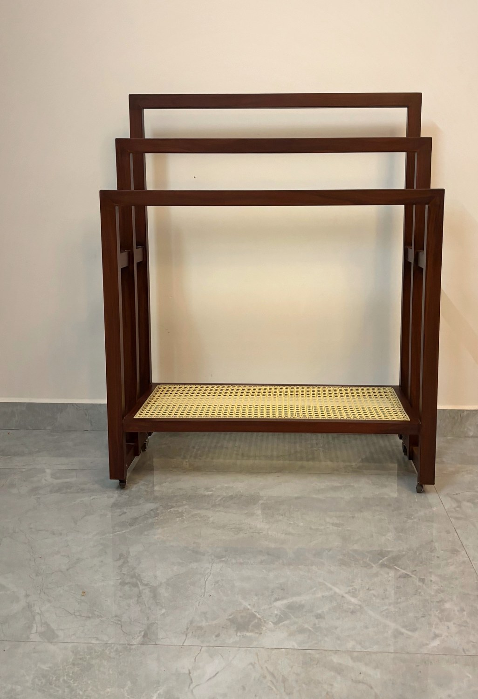
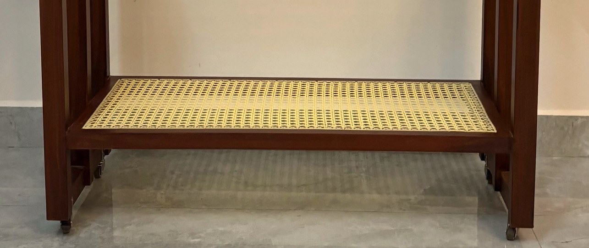

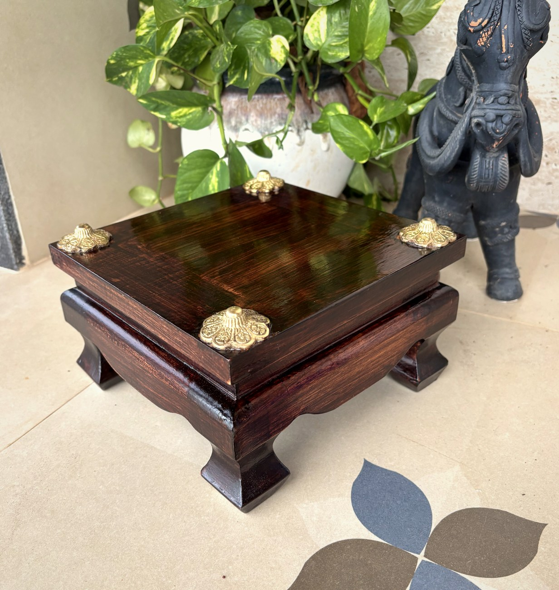
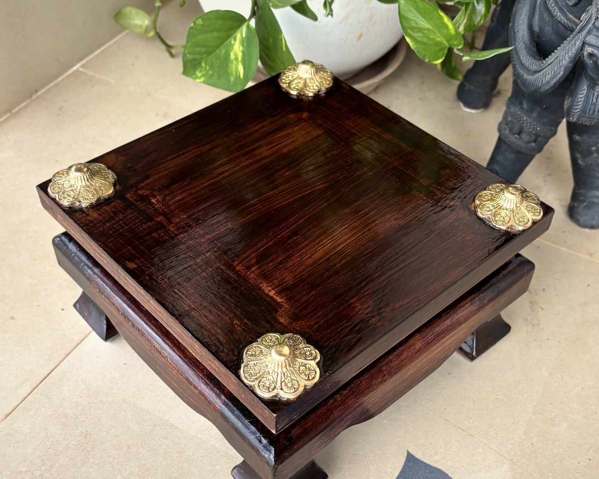
04 · The sacred corner
A low teak platform with a mitred top, shaped bracket feet and cast brass caps at each corner, finished in a deep rosewood polish — for the prayer room, or as a quiet pedestal anywhere in the home.
Teak · brass corner caps
Also: peacock-tile stools, pooja mandir stands
05 · The foot of the bed
A long teak seat on softly splayed legs, with a hand-woven cane panel floating behind it in a rounded teak frame. Light enough for a bedroom, sturdy enough for a hallway.
Solid teak · hand-woven cane back
Made to your length
Suits homes, receptions and waiting areas
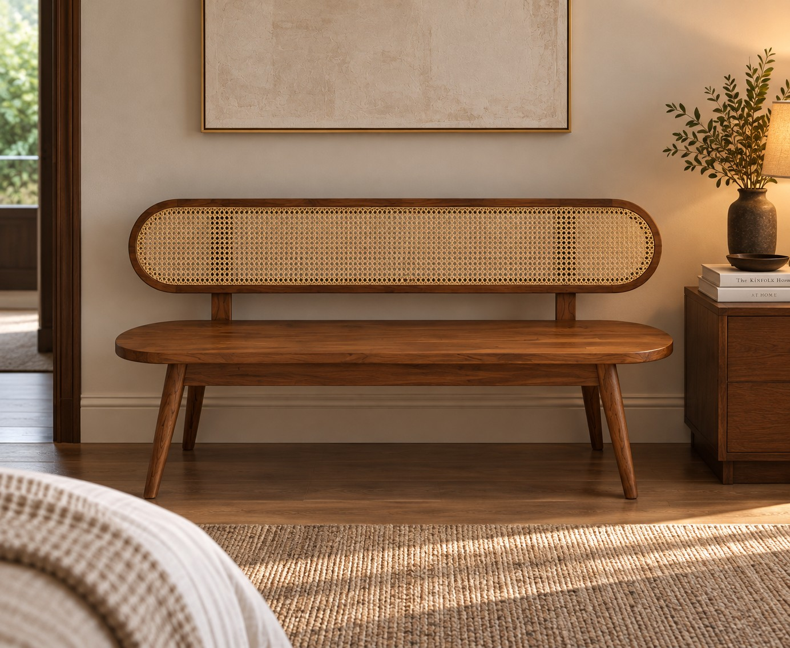
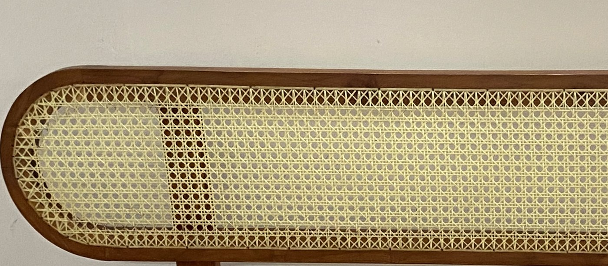
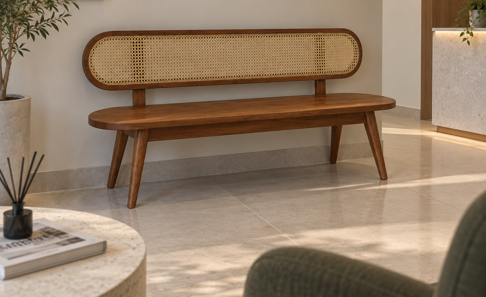
06 · The heirloom corner
A lidded teak chest on three lockable drawers, bound in engraved brass at every corner and hung with silk tassels. Built the way a merchant’s petti was built — to be handed down.
Solid teak · engraved brass · working lock and key
Three drawers with a deep lidded well above

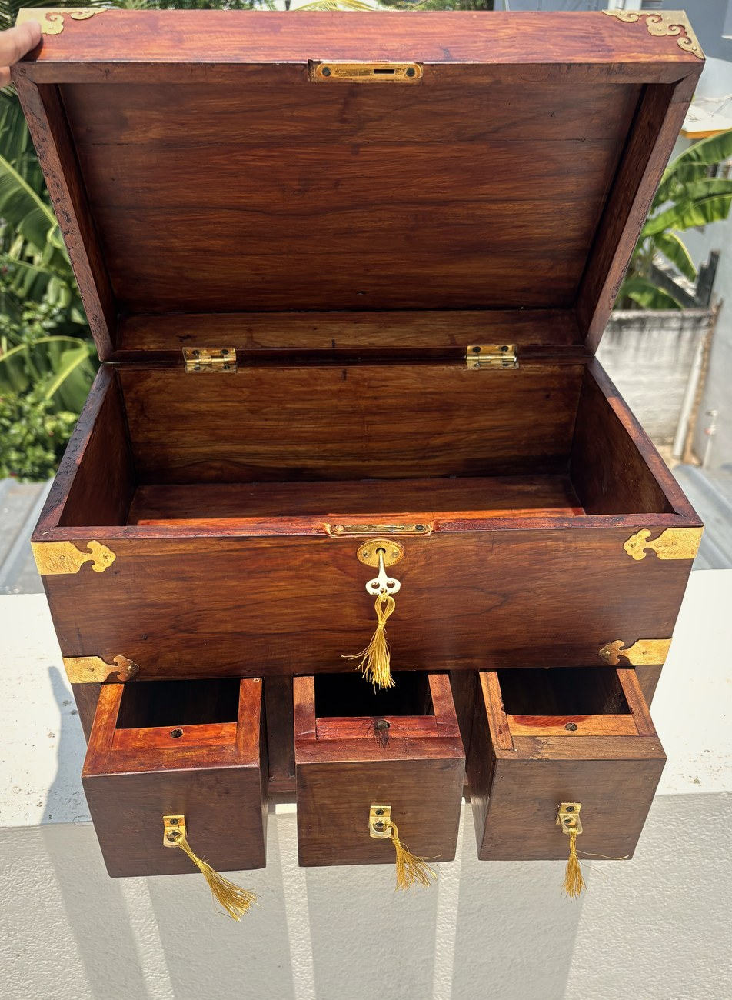
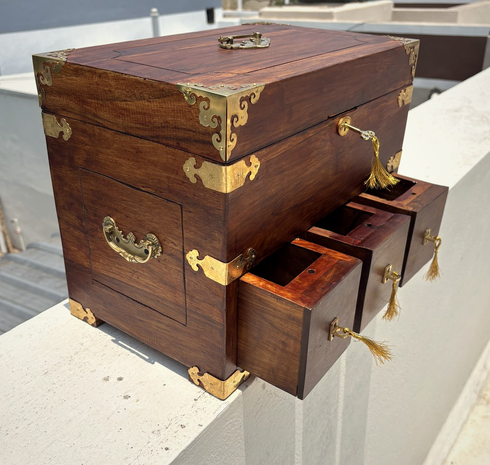

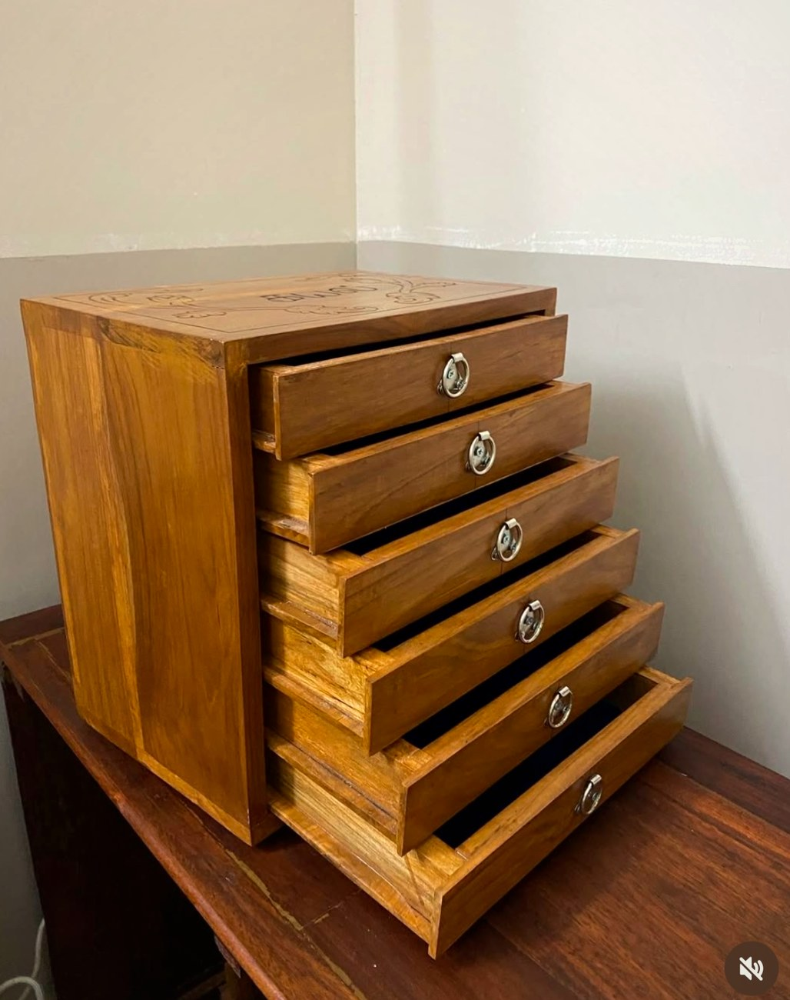
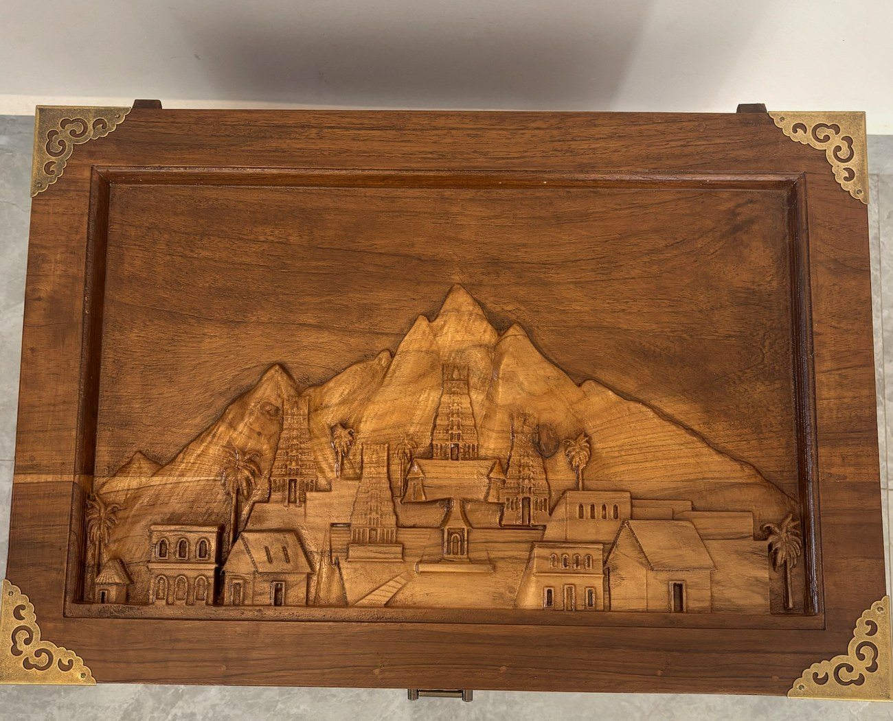
07 · The dressing table
Six velvet-lined teak drawers under a carved lid, each with a ring pull. The lid can carry a name or a motif of your choosing, cut by hand — which is what makes it a gift rather than a box.
Solid teak · velvet-lined drawers · metal ring pulls
Name or motif carved to order
Also made as bangle boxes and keepsake boxes

08 · Behind the door
A moulded teak board and a row of cast brass hooks — leaf-shaped or plain. The small piece that makes an entrance, a bathroom or the back of a bedroom door feel finished.
Solid teak · cast brass hooks
Three, four or five hooks, made to your length